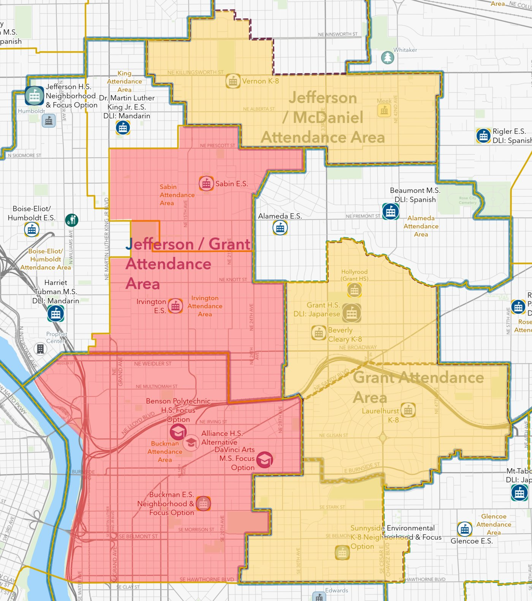

Which K-8s does PPS keep?
PPS says a K-8 needs at least 500 students to be sustainable. Only three K-8s are forecast to reach that in 2026-27, and both plans still convert all three. And once their middle graders leave, six of the seven converted K-8s would start out below PPS’s 360-student threshold for a K-5, given their current boundaries.1
Inexplicably, every K-8 that PPS keeps is already below PPS’s own threshold of 500—and smaller than every school facing conversion. There’s something PPS isn’t telling us.
| Enrollment Projections for 2026-2027 School Year | |||
|---|---|---|---|
| PPS K-8 | Plans A and B | Students PSU forecast | As a K-5 minus grades 6–8 |
| Faubion | To K-5 | 627 | 4182 |
| Laurelhurst | To K-5 | 574 | 3483 |
| Vernon | To K-5 | 515 | 334 |
| Sunnyside Environmental4 | To K-5 | 482 | 2962 |
| Beverly Cleary | To K-5 | 464 | 2732 |
| Bridger Creative Science | To K-5 | 449 | 318 |
| César Chávez | To K-5 | 424 | 2775 |
| Astor | Stays K-8 | 414 | — |
| Winterhaven | Stays K-8 | 315 | — |
| MLC | K-12 to K-8 | 266 | — |
| Odyssey | Stays K-8, moves | 221 | — |
| Skyline | Stays K-8 | 203 | — |
“Rightsizing” will destabilize inner NE and SE Portland community schools (and communities)
Both plans close Sabin, Irvington, and Buckman elementary schools, and convert four neighboring K-8s to K-5s: Beverly Cleary, Laurelhurst, Sunnyside, and Vernon. Within a few square miles, seven neighborhood schools close or lose their middle grades at the same time, and every school taking in students is changing, too.6
- Attendance areas of schools that close (Sabin, Irvington, Buckman)
- Four of the seven K-8s PPS would convert to K-5s

- Other schools inside the red areas, such as Benson High School and da Vinci Arts Middle School, aren’t closing. Rose City Park, just east of this map, also closes in Scenario A only.
- Faubion, the largest K-8 slated for conversion, is just north of Vernon K-8, to the east of the “hump” in its attendance area. Faubion was not colored in to avoid confusion about Vernon’s attendance area.
1 Sources for the table: plans and the 500-student K-8 threshold are from PPS’s Rightsizing scenario comparison, Oct. 4, 2026 (grade-level changes are the same in both scenarios). Enrollment forecasts are from the PSU Population Research Center. “As a K-5” is the 2026-27 forecast minus PPS’s own grades 6–8 count for each school (TLE Committee, “Middle Grades,” Oct. 13, 2026), compared with PPS’s 360-student threshold for a K-5. It assumes no other changes. Odyssey moves to MLC’s building. ACCESS Academy, a grades 2–8 gifted program, also stays; it isn’t in the table because it’s missing two grades, but its 315 students forecast for 2026-27 are also below 500. This table shows PPS’s choices. It doesn’t say what any other school’s families want. ↑
2 Both plans also redraw this school’s boundary, which could add or remove students; PPS hasn’t published those numbers. ↑
3 hollywoodHUB, a new affordable apartment building in Laurelhurst’s boundary, is scheduled to open in spring 2027. PSU expects it to add about 30 K-5 students starting in 2027-28. More on how Laurelhurst’s neighborhood is changing. ↑
4 Sunnyside is trending the other way. Its enrollment grew 5% last year, from 461 to 485 (PPS, October 2025 enrollment summary), and its PTA reports 507 students this fall, above PPS’s 500 threshold. PSU forecasts Sunnyside to hold roughly steady over the next ten years (−2%), the most stable of the seven K-8s PPS would convert, while the typical PPS elementary, K-8, or middle school is forecast to shrink about 10% (PSU forecast, 2026-27 to 2035-36). Sunnyside’s families make their own case at save.sesptsa.org. ↑
5 Both plans also move Spanish immersion students from Beach, James John, and Sitton to César Chávez, so its K-5 would grow. ↑
6 Closures, conversions, and receiving schools are from PPS’s Rightsizing scenario comparison, Oct. 4, 2026, and the Rightsizing Update: Scenario Release memo, Oct. 6, 2026: Sabin consolidates into Dr. Martin Luther King Jr. School, which also gets new boundaries and loses its Chinese immersion program; Irvington into Beverly Cleary, which converts to a K-5; and Buckman about evenly into Abernethy, which gets new boundaries, and Sunnyside, which converts to a K-5. Map: my overlay on PPS’s 2026-27 attendance boundary map. ↑